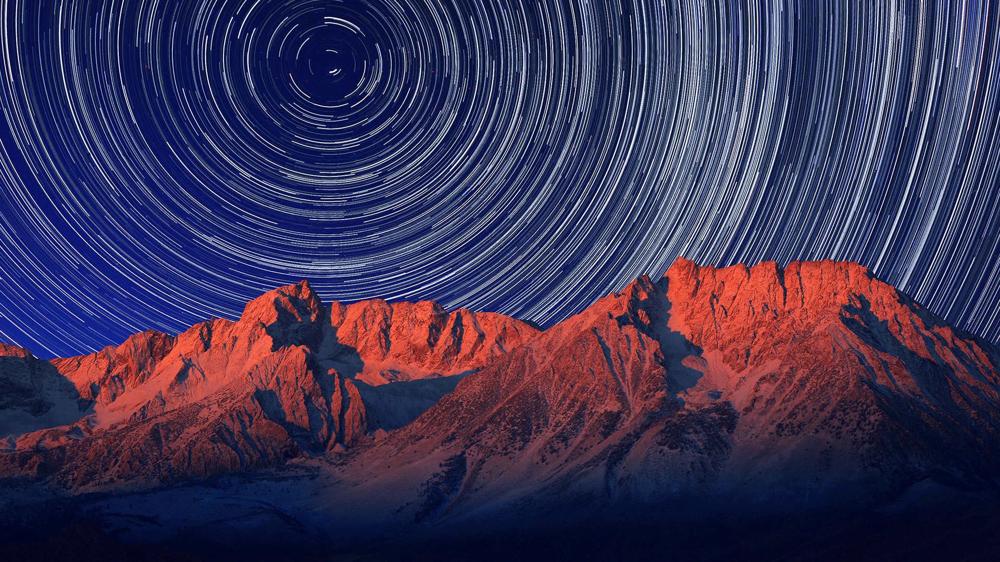

Night photography can be an incredible way to document your outdoor adventures, the most immense, brilliant
images of the night sky come from 'off the beaten path' where there is very little light pollution. While
camping, hiking, staying in a cabin for the weekend or just driving out to a deserted location for the night
to shoot, night photography will require some practice but with a few tips you can get the impressive shot you
are looking for. The first thing to consider is your composition, the stars are beautiful and the milky way is
an awe inspiring but shooting straight up at the sky will give you an image without any reference for how expansive
and impressive that night scape is. Adding a tree, a mountain range or stepping in front of the camera yourself will
help put perspective into your image.

Photographing the night sky isn’t quite as straightforward as one might think. In fact, it is in many cases quite opposite of ‘regular’
landscape photography. Using the ‘wrong’ settings might lead to complete black images, and from experience, a lot of frustrations. To capture
beautiful images of the night sky, you need to choose the right aperture, ISO and shutter speed. These are the settings you want to use:
To calculate the maximum shutter speed for your lens. Luckily, there’s a formula! Take the number 500 (for full-frame sensors) or 300 (for crop sensors) and divide it by the focal length:
- 14mm: 500/14 = 35 seconds (300/14 = 21 seconds)
- 16mm: 500/16 = 31 seconds (300/16 = 18 seconds)
- 20mm: 500/20 = 25 seconds (300/20 = 15 seconds)
- 24mm: 500/24 = 20 seconds (300/24 = 12 seconds)
Use the formula above to calculate the maximum shutter speed for your lens to keep stars sharp. The use of a slower shutter speed will result in the stars appearing as blurry oblong trails.

After you get these techniques down you can try getting creative with your images and playing with the light in the scene. Leaving the shutter speed open for longer than
your calculated max shutter speed will create a light path that the stars create from the movement of the earth, creating star trails and using a flashlight to
illuminate different objects in the scene will create nice contrast...go out and create!